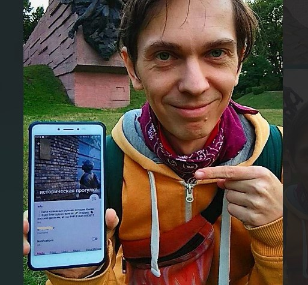

CITY AND MAPS
Walkbots tours
2019–25 Telegram bots that use live location feature to tell immersive story on the ground.
The first story - Kyiv occupation and Babiy Yar Holocaust tragedy during WW2, 40+ points, 15km.
Started as google apps script and then evolved to fully custom engine with KML parser and Telegam bot API POST wrapper [node.js].
Throught the Kyiv

hashtag #КИЕВнасквозь
2017–19 // 23-... I've developed new Kyiv urban hikes: Throught the City for all day walking. 35-44 km in a group of strangers for free.
Official telegram @kievpohod. JS code for showing route's main points and estimated time on map.
Falafel map

2016–17 Mapping of Kyiv's falafel points with price and commenting. Active exploration and degustation around the city.
Managing community of falafel lovers in vk.com and fb.
JS code. MapBox API. DISQUS commenting widget. Data in geoJSON. Archive on /kievfalafel
Kyiv urban hikes

2010–11 Open Saturday's hikes thru unknown Kyiv. Started from new vk.com section "looking for a travel companion".
Public speaking about the importance of knowing where you live. Creating video from my Pecha Kucha presentation.
Website-catalog /kievpohod was build with WordPress engine. Using Yandex map and Google Picasa photo albums.
SELF-GROWS
87 online
2017-18 Unic self-tranformational weekly diary privat facebook group
Initial offline and online entrance interviews. Web-app for task catalog (starting as trello board). Video instructions and everyday communications with participants.
Promo site and video was at 87.dan.kiev.ua
Coping with jealousy

2016–17. Kyiv, Kharkiv Integrated transformational experience for overcoming personal limits in relationships. Using psy techniques to work with your states, especially jealousy.
I created powerful offline training program + online awareness marathon-diary with personal tasks [facebook group] + discussion support group.
Co-founder of "Sex Education Week"
podcast-interview: mixcloud.com
2017–18 Open educational project "Sex Education Week", Kyiv.
Unlucky one. Fistly, one of our lectures was attacked with tear-gas by group of ultra-right anti-LGBTQ activists (news). Then our facebook public was hacked and stolen. Our brand was spoiled (my article).
PSY TECH
Svoyo Delo
2010-11 Online system for career guidance. Based on my IAPM graduation research and extended with a personality test for greater accuracy. Has database of various professions.
Codded and UI/UX designed by me from scratch. LAMP (MySQL, PHP) and jQuery + jQuery UI and Google graph API.
Was at svoyodelo.com. See code on GitHub
Biorhythms calculator

2003–07 Windows app for calculating your personal biorhythms cycles by date of birth (not scientific method).
Started as personal education project on Turbo Pascal 7.0. Then was recodded in Delphi 5 and 7. In 2005 translated into English and I tried to sell as shareware.
Rus version bioritmi.narod.ru was freeware.